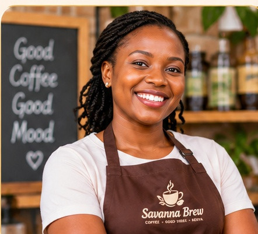

Quality
Only freshly roasted, single-origin Kenyan beans.
The people behind the pour
Our story starts on a coffee farm in Nyeri and continues around every table in Westlands.

Our story
Savanna Brew Café opened in 2019 with one small espresso machine and a big dream: to celebrate Kenyan coffee. Founder Amina Otieno grew up on her grandparents' coffee farm in Nyeri and wanted to bring that flavour to the city.
Today the café supports local farmers, uses eco-friendly packaging and hosts community events every month.
“Every cup should carry a little warmth from the people and places that made it possible.”— Amina Otieno, founder
What guides us
Only freshly roasted, single-origin Kenyan beans.
Fair prices for farmers and a welcoming space for all.
Compostable cups and zero-waste pastries.